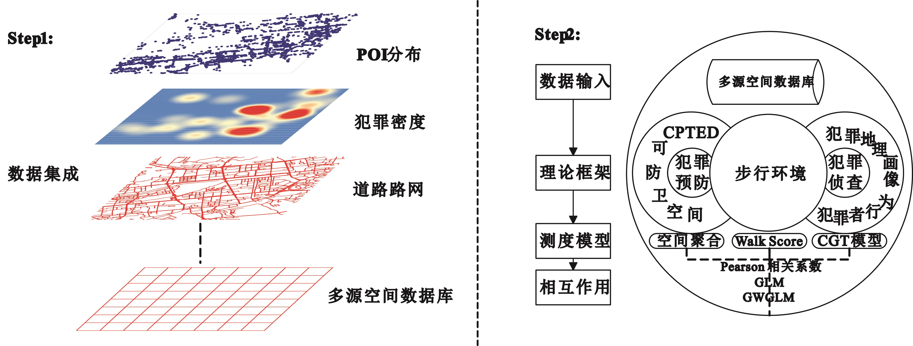
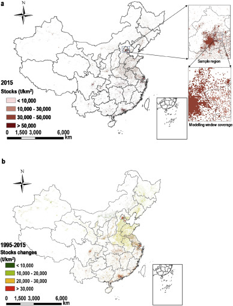
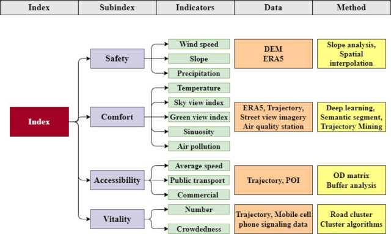
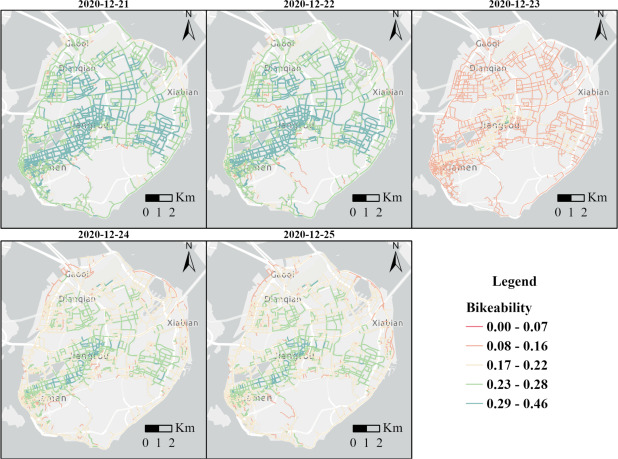
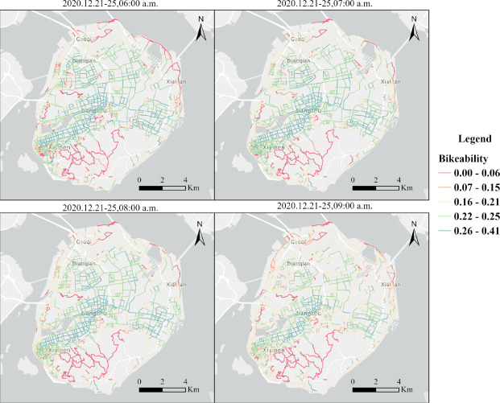
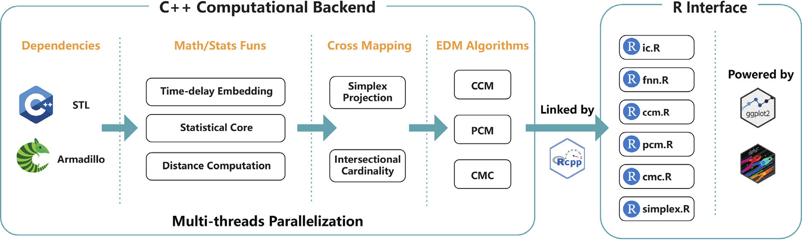
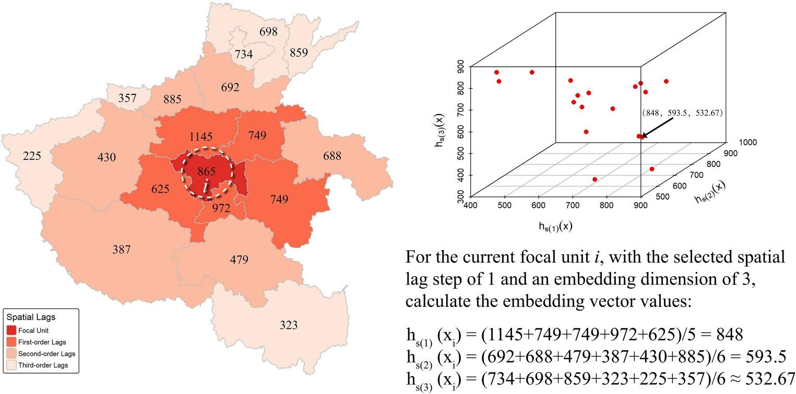

Spatial-Temporal GIS Theory

Spatial-temporal data are the key to handling big data in this era. On the one hand, we need to explore and improve the spatial-temporal GIS theory; on the other hand, big data allow us to revisit classical theories and their applications, such as spatial-temporal human behavior and criminal geography. Scale effect and the modified areal unit problem (MAUP) remain unsolved problems in geographical study. This project improves spatial-temporal geographical theory and its applications through four threads: crime geography, high-resolution mapping of urban elements, spatiotemporal physical activity assessment, and causal discovery with empirical dynamic modeling.
1 Application of spatial statistical theory in crime geography
Does Jacobs’ “eyes on the street” theory hold in Chinese cities? We applied spatial statistical theory to the walking environment and RST (robbery, snatch, and theft) crime in H city. The results show that the walking environment probably has a positive effect on RST crime—the greater the walkability, the more RST crime—and the effects have spatial heterogeneity features, suggesting that Western experiences cannot be directly transplanted to Chinese cities.

Figure 1. Analytic framework.
The paper was published in Scientia Geographica Sinica (in Chinese)
2 High-resolution mapping of urban elements
High-resolution mapping of steel resources accumulated above ground is critical for exploring urban mining and circular economy opportunities. We developed an aggregative downscaling model that fuses gridded population, GDP, and built-up area data to map steel stocks in mainland China at 1 × 1 km resolution. The results show that steel stocks increased from 12,873 to 33,027 t/km² during 1995–2015, and four major clusters possessed over 40% of the national total in 2015, revealing an unbalanced distribution across China.

Figure 2. National coverage of in-use steel stocks in 2015 at 1 × 1 km grid level and an example (in a partial view) of the modelling area (a), and stocks changes during 1995–2015 (b).
The paper was published in Journal of Cleaner Production
3 Spatiotemporal physical activity assessment with GeoAI
We developed a bikeability evaluation framework by fusing multi-source spatiotemporal big data, revealing the daily and hourly dynamics of cycling friendliness on Xiamen Island.

Figure 3. The proposed bikeability framework.

Figure 4. Average bikeability of Xiamen Island on December 21st, 22nd, 23rd, 24th, and 25th, 2020; the roads highlighted in red indicate lower levels of bikeability, whereas those in green indicate higher levels.

Figure 5. Average bikeability of Xiamen Island at 6:00, 7:00, 8:00, and 9:00 a.m.
《Int J Appl Earth Obs》发文：基于多源地理空间大数据的时空自行车可行性评估
The paper was published in International Journal of Applied Earth Observation and Geoinformation
4 Temporal causal discovery in urban data with empirical dynamic modeling
Urban systems are complex, nonlinear, and adaptive, and correlation- and regression-based methods often fail to capture their dynamic causal structures. We developed tEDM, an open-source R package that implements and extends empirical dynamic modeling (EDM) for temporal causal discovery in urban data. The package couples a multithreaded C++ computational backend with an R interface, supporting heterogeneous, high-frequency, multivariate, and spatially replicated urban time series, with case studies covering environmental health, carbon-climate dynamics, and epidemic spread.

Figure 6. Overview of the source code architecture of the tEDM package.
The paper was published in Computers, Environment and Urban Systems
5 Measuring causal strengths from spatial cross-sectional data
Quantifying causal strengths from spatial cross-sectional data remains challenging, as existing methods often suffer from high false positive rates. We proposed the Geographical Cross Mapping Cardinality (GCMC) model, which quantifies causal strength based on the intersectional cardinality of neighborhoods in reconstructed state space and evaluates statistical significance with the DeLong placement method. Validated on a simulated causal benchmark and three spatial datasets with known causal structures, GCMC reliably captures causation across weak, moderate, and strong coupling regimes, extending empirical dynamic modeling to spatial cross-sectional inference.

Figure 7. Demonstration of reconstructing embedding for spatial cross-sectional data.
The paper was published in International Journal of Geographical Information Science
Shaoqing Dai
Postdoc
Publications
Editorial: Machine learning for advanced remote sensing: from theory to applications and societal impact
Measuring causal strengths from spatial cross-sectional data with geographical cross mapping cardinality

Causal discovery in urban data with temporal empirical dynamic modeling: The R package tEDM

Toward 3D hedonic price model for vertically developed cities using street view images and machine learning methods

Assessing spatiotemporal bikeability using multi-source geospatial big data: A case study of Xiamen, China

Assessing bicycle-sharing riding friendliness by fusing multi-source heterogeneous spatio-temporal big data
Quantifying urban mass gain and loss by a GIS-based material stocks and flows analysis
Assessing riding friendliness by fusing multi-source heterogeneous spatio-temporal big data
High spatial resolution mapping of steel resources accumulated above ground in mainland China: Past trends and future prospects
Influence of Walking Environment on Robbery, Snatch and Theft Crime in Urban Area, H City, China(Chinese)

The Analysis of Urban Spatial Development Pattern in Beijing Based on the Big Data of Government(Chinese)
Talks
Application of night light remote sensing data in urban studies
The Scale Effect, Zoning Effect of Geographical Features, the Modified Areal Unit Problem and the Chanlleges of Spatial Stastistics

The Criminal Geographical Analysis about Walking Environment of Urban